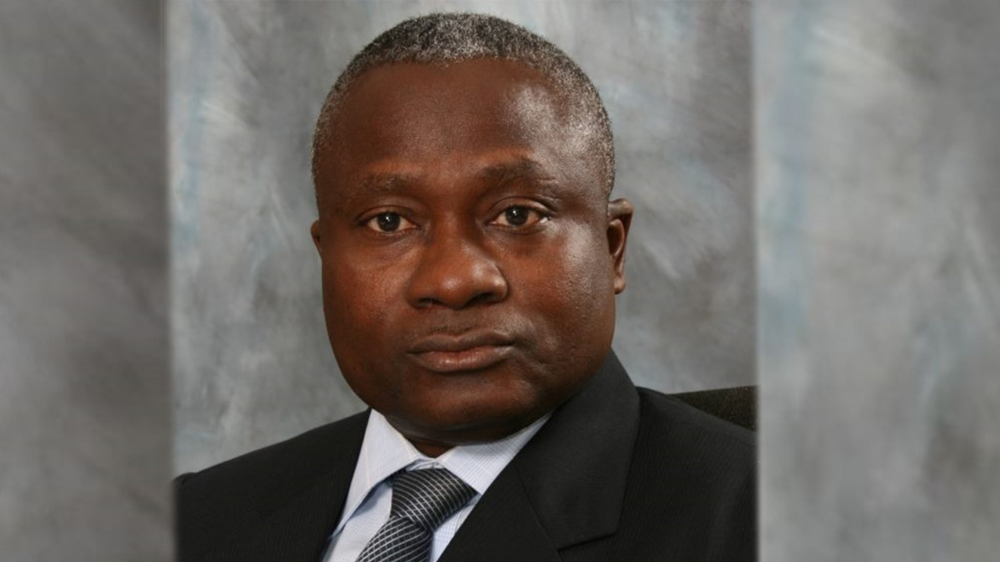

No government will use Ebola as political weapon —NCDC DG

Nigeria’s disease-control chief, Jide Idris, said the government would not use the Ebola outbreak for political purposes. Speaking on Monday, the Director-General of the Nigeria Centre for Disease Control and Prevention said the health response was not being driven by electoral considerations, amid claims that disease controls could be used to influence the 2027 elections.
Asked whether the outbreak could lead to a postponement, Idris said that decision was beyond his authority. He said there was no current reason to delay the elections, while acknowledging that a widespread outbreak could raise public health concerns. The Independent National Electoral Commission has set 16 January 2027 for the presidential and National Assembly elections.
Idris said Nigerian health authorities had monitored the outbreak in the Democratic Republic of the Congo for months and had prepared for the possibility of an imported case because of population movement and international flights. Although the index patient was evacuated to Switzerland, Idris cautioned that Nigeria was not yet Ebola-free. He said there was no active positive case, but contacts were being followed up and suspected exposures investigated.
The response has also become part of political debate. African Democratic Congress presidential candidate Atiku Abubakar questioned the government’s handling of the outbreak and sought an account of N10 billion approved for preparedness. The APC Presidential Campaign Council accused him of politicising the health emergency and said the funding remained untouched. The State House announced in June that President Bola Tinubu had approved the emergency funds to strengthen NCDC preparedness and support public health response activities.
Source: Premium Times